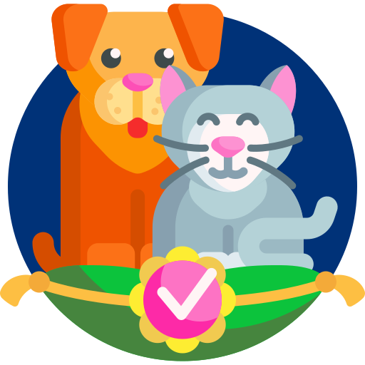

<ion-header translucent>
  <ion-toolbar>
    <ion-buttons slot="start">
      <ion-button routerLink="/adoptar/paso-1">
        <ion-icon name="arrow-back-outline" size="large" slot="start"></ion-icon>
      </ion-button>
    </ion-buttons>
    <ion-title class="ion-text-center">Adoptar Mascota Paso 2</ion-title>
  </ion-toolbar>
</ion-header>
<ion-content class="ion-text-center ion-padding">
  <div class="ion-text-center">
     
  </div>
  <h2 class="ion-text-center">¿Desea primero visitar a la mascota?</h2>
  <br>
  <div class="ion-text-center"> 
    <ion-button expand="full" class="ion-text-sm-capitalize" routerLink="/adoptar/paso-2/agendar">Agendar Cita</ion-button>
    <br>
    <ion-button expand="full" class="ion-text-sm-capitalize" routerLink="/adoptar/paso-3">No deseo visitarlo</ion-button>  
  </div>
</ion-content>
